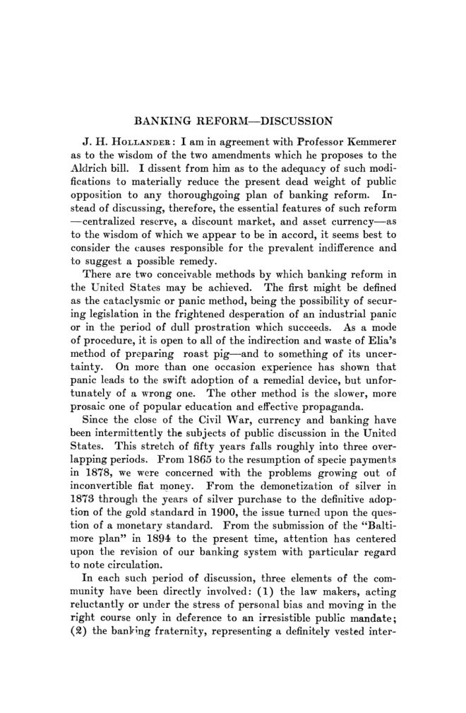

Boston, 1912: população, dólar padronizado e os limites da regulação
Leitura: 5 min
Boston, dezembro de 1912: Fetter opõe população a prosperidade, Fisher propõe um dólar de peso variável, Kemmerer discute a reforma bancária e Clark e Wright divergem sobre regular preços dos trustes.


Na noite de 28 de dezembro de 1912, no salão de banquetes do Copley Plaza, em Boston, Frank A. Fetter, de Princeton, leu o discurso presidencial da American Economic Association numa sessão conjunta com a American Political Science Association. O título punha a escolha em duas palavras: população ou prosperidade. Para Fetter, os Estados Unidos já tinham passado do ponto em que mais gente significava mais renda por habitante.
O suplemento de março de 1913 reúne os papers e os debates da vigésima quinta reunião anual, realizada de 27 a 31 de dezembro de 1912, entre o Massachusetts Institute of Technology, em Boston, e Harvard, em Cambridge. Além do discurso de Fetter, a reunião discutiu o custo de vida e o dólar padronizado de Irving Fisher, a reforma bancária, as teorias da distribuição, a administração de fazendas e a regulação governamental de preços. A sessão conjunta com a American Association for Labor Legislation, sobre a teoria do salário mínimo, aberta por Henry R. Seager, não aparece no volume: seus textos saíram na American Labor Legislation Review.
O que Fisher propunha contra a alta do custo de vida?
Fisher não propunha baixar preços, mas estabilizar a unidade que os mede. O dólar tinha peso fixo, 25,8 grãos de ouro, e poder de compra variável; o plano invertia a relação, ajustando o peso de ouro por trás do dólar conforme um índice oficial de preços. Os debatedores, em geral, aceitaram o princípio e duvidaram da execução: Albert C. Whitaker questionou que o ajuste pudesse ser automático, e E. W. Kemmerer previu desordem no câmbio se um país adotasse o plano sozinho. Fisher respondeu que só o defendia por acordo internacional.
Por que a reforma bancária estava parada?
Kemmerer, de Princeton, constatou que cinco anos depois do pânico de 1907 nenhuma reforma legislativa relevante do sistema bancário nacional fora aprovada. O plano da National Monetary Commission, com sua National Reserve Association, não constava da plataforma de nenhum partido. O obstáculo, segundo ele, era o temor de que a instituição fosse controlada por grandes interesses financeiros. Sua proposta mexia no governo da associação, não nas funções: mais diretores nomeados pelo presidente da República e voto igual para cada banco.
Regular preços ou restaurar a concorrência?
A última sessão opôs dois papers sobre a regulação de preços dos trustes. J. M. Clark, do Amherst College, sustentou que fixar preços e lucros de indústrias inteiras levantaria problemas que nem a Interstate Commerce Commission resolvera nas ferrovias, e preferiu restaurar a concorrência. Chester W. Wright, da University of Chicago, examinou as objeções e concluiu que nenhuma bastava para condenar a regulação nos poucos casos em que outros remédios falhassem.
Que outros temas ocuparam a reunião?
Na mesa sobre distribuição, Simon N. Patten defendeu que o excedente social é um fundo único, movido de uma classe a outra pela pressão social, e não três fundos fixos de renda da terra, juros e salários; B. M. Anderson Jr., W. M. Adriance e L. N. Robinson contestaram. Na mesa de administração de fazendas, H. C. Taylor pediu que economistas estudassem o lado de negócio da agricultura, e T. N. Carver perguntou se boa agricultura significa muito produto por acre ou por homem. As atas registram a eleição de David Kinley, da University of Illinois, para a presidência.
Na minha leitura
Na minha leitura, o volume de Boston gira em torno de uma pergunta de método: quanto da política econômica pode ser reduzido a regra automática. Fisher quer um índice de preços que comande o peso do dólar sem arbítrio; Kemmerer quer regras de voto que tornem um banco central aceitável; Clark e Wright discutem se uma comissão consegue fixar o lucro razoável quando desaparece o mercado que serve de padrão. Em todos os casos, a regra depende de uma medida, e a medida depende de que haja algo independente para medir.
Glossário
- Dólar padronizado
- plano de Fisher de variar o ouro por dólar conforme um índice de preços, para fixar seu poder de compra.
- National Reserve Association
- instituição central de reservas proposta pela National Monetary Commission, no chamado plano Aldrich.
- Lei Aldrich-Vreeland
- lei de 1908 que autorizou emissões de emergência de notas bancárias, com vigência limitada.
- Câmara de compensação
- associação de bancos que liquida cheques entre os membros e, em crises, emite certificados.
- Escala móvel
- regra que permite à concessionária elevar dividendos à medida que reduz o preço cobrado.
- Excedente social
- em Patten, a parte do produto acima do necessário, disputada entre as classes.
Artigos (12)
- Twenty-Fifth Annual Meeting: Program — Programa da reunião (pp. 1–4). Programa da reunião de Boston, de 27 a 31 de dezembro de 1912. A primeira sessão, conjunta com a American Association for Labor Legislation e presidida por Fetter, tratou da teoria do salário mínimo, com paper de Henry R. Seager; seus textos foram publicados na American Labor Legislation Review. A segunda discutiu o custo de vida, a terceira reuniu os discursos presidenciais de Fetter e de Albert Bushnell Hart, e as de segunda-feira, em Harvard, trataram da reforma bancária e das mesas-redondas. Os sócios também visitaram o porto de Boston, cuja melhoria contava com nove milhões de dólares. O almoço final teve falas de Albion W. Small, Talcott Williams, S. C. Mitchell e Charles W. Eliot. JSTOR
- Population or Prosperity: Annual Address of the President — Frank A. Fetter, Princeton University; discurso presidencial (pp. 5–19). Fetter parte de Malthus para definir o problema da população como o de achar a melhor proporção entre o número de habitantes e os recursos de um país, julgada pelo bem-estar duradouro da massa do povo. Lembra que a doutrina americana foi sempre otimista, porque terra livre e população crescente interessavam a proprietários, empresários e governo. Esse quadro, diz, mudou por volta de 1890, com o fim da fronteira de terras férteis: o acréscimo de habitantes por milha quadrada, que fora de 0,7 no primeiro período de trinta anos desde 1790, chegou a 14 no quarto. Desde 1896 os alimentos subiam mais que os preços em geral, e as exportações de alimentos caíam desde 1898. A conclusão é que o país passara do ponto de rendimentos decrescentes e que o crescimento da população anulava, para a massa, os ganhos técnicos. Conservação de recursos ajuda, mas só adia o esgotamento. Dos fatores de crescimento, o único controlável por lei seria a imigração, que Fetter discute pelo efeito sobre a oferta de trabalho e os salários. O ideal proposto é o estado estacionário de Mill, com população estável e progresso nas artes. JSTOR · ler o comentário
- A Remedy for the Rising Cost of Living: Standardizing the Dollar — Irving Fisher, Yale University (pp. 20–28). Fisher apresenta o plano de padronizar o dólar, que já esboçara no congresso internacional de câmaras de comércio. O dólar tinha peso fixo, 25,8 grãos de ouro, e poder de compra variável; ele propõe um dólar de poder de compra fixo e peso variável. Na prática, o governo deixaria de comprar e vender ouro ao preço fixo de US$ 18,60 a onça e passaria a mudar esse preço conforme um índice oficial de preços: se o índice subisse 1% acima do par, o dólar virtual ganharia 1% de ouro. As moedas de ouro continuariam a circular como fichas, e a diferença de peso funcionaria como senhoriagem. Uma taxa de cunhagem de 1%, a brassagem, impediria a especulação com as mudanças de preço. Fisher atribui ao padrão-ouro, que chama de padrão de peso e não de valor, a depressão de 1873 a 1896 e a alta posterior, e compara o dólar às unidades de medida já padronizadas, como a jarda e as unidades elétricas. JSTOR · ler o comentário
- Standardizing the Dollar--Discussion — Nat C. Murray, Albert C. Whitaker, Willard C. Fisher, O. M. W. Sprague, B. M. Anderson Jr., R. R. Bowker, E. W. Kemmerer e Irving Fisher (pp. 29–51). Murray mostra que a produção mundial de cereais cresceu mais que a população desde 1896, de modo que a alta de preços não se explica por escassez agrícola. Whitaker aceita a teoria quantitativa, mas duvida que o ajuste do peso possa ser automático. Willard C. Fisher atribui a alta ao ouro e nega que tarifas ou monopólios elevem o nível geral de preços; Anderson contesta. Sprague sugere um imposto internacional sobre a cunhagem de ouro. Kemmerer prevê desordem cambial se um país agir sozinho. Fisher responde que só defende o plano por acordo internacional e mostra, com um exemplo numérico, como o ajuste repetido mantém o índice perto do par. JSTOR · ler o comentário
- Banking Reform in the United States — E. W. Kemmerer, Princeton University (pp. 52–63). Kemmerer constata que, cinco anos depois do pânico de 1907, a única lei relevante fora a Aldrich-Vreeland, provisória, que expiraria em 30 de junho de 1914 e sob a qual nenhum dólar de notas fora emitido. O plano da National Monetary Commission, com uma National Reserve Association, não entrou na plataforma de nenhum partido, e os agricultores, que mais ganhariam com moeda e crédito elásticos, se mostravam indiferentes ou hostis. O obstáculo, diz, não estava nas funções propostas, mas no temor de controle pelo chamado money trust. Ele propõe reconhecer a associação como depositária de interesse público: diretores não banqueiros nomeados pelo presidente da República, um terço dos conselhos regionais indicado pelos governadores, conselho central reduzido de 46 para 28 membros e a regra de um voto por instituição, independentemente do capital. Como precedentes, cita as câmaras de compensação americanas, as National Currency Associations e o Banco da Inglaterra, cujos diretores não podiam ser banqueiros. JSTOR
- Banking Reform--Discussion — J. H. Hollander, Leroy D. Peavey, O. M. W. Sprague, E. E. Garrison, E. W. Goodhue, Royal Meeker, John R. Commons, Arthur S. Dewing, O. W. Knauth, John M. Clark, Eugene E. Agger, John H. Sherman, E. Dana Durand e E. W. Kemmerer (pp. 64–88). Hollander concorda com as emendas, mas duvida que bastem para vencer a indiferença do público. Sprague elogia a simplicidade do esquema de Kemmerer. Garrison sustenta que o problema estava nas funções propostas, não na organização. Commons pede que os economistas examinem as cláusulas econômicas do projeto, e não só as políticas; Agger e Sherman discutem as brechas de redação. Dewing se opõe a uma associação central administrada por nomeados políticos, e Knauth quer maioria de diretores do governo. Kemmerer admite a complexidade, mas a considera necessária a uma organização centralizada. JSTOR
- Theories of Distribution: Round Table Discussion — Simon N. Patten (coordenador), B. M. Anderson Jr., W. M. Adriance e L. N. Robinson; resumo de Frank A. Fetter (pp. 89–95). Patten sustenta que as teorias da distribuição foram tratadas como parte da economia estática. Em lugar de três fundos fixos, renda da terra, juros e salários, cada um governado por uma lei natural, ele vê um único excedente social, que a pressão social desloca de uma classe a outra até chegar ao consumidor; o problema real passa a ser o das forças que fixam os padrões de vida de cada classe. Anderson responde que a crítica de Patten às categorias usuais depende de dar às palavras sentidos incomuns. Adriance e Robinson também divergem. O resumo de Fetter registra uma discussão mais animada que qualquer sessão de teoria em muitos anos. JSTOR
- Farm Management: Round Table Discussion — H. C. Taylor (coordenador), T. N. Carver, C. K. Graham, J. A. Valentine, Richard Hittinger, W. H. Bowker e Wilbur O. Hedrick (pp. 96–113). Taylor observa que a ciência agrícola se desenvolveu pela química e pela biologia, deixando ao agricultor o lado econômico; cita um químico que estimou perdas anuais de US$ 25 milhões com o manejo do esterco sem descontar o custo de evitá-las. Para ele, o centro da administração de fazendas é um problema de proporções entre terra, trabalho e equipamento. Carver divide o tema em investimento, administração interna e compra e venda, e diz que, para cada agricultor capaz de vender bem, há provavelmente dez capazes de produzir bem. Graham, Valentine, Hittinger, Bowker e Hedrick tratam de fazendas-escola, contabilidade agrícola, mercados e ensino. JSTOR
- Frontiers of Regulation and What Lies Beyond — J. M. Clark, Amherst College (pp. 114–125). Clark examina a proposta de aceitar os trustes e regular seus preços, como a Interstate Commerce Commission fazia com as ferrovias. Sustenta que nem nas ferrovias o problema do nível geral das tarifas estava resolvido: a própria comissão dizia não ter autoridade para fixar quanto as empresas deviam ganhar. Na indústria, as dificuldades seriam maiores: estimular a eficiência sem a concorrência, regular a qualidade junto com o preço, fixar também os preços dos insumos agrícolas comprados pelos trustes, lidar com minas e patentes. A escala móvel, que funcionara com o gás de Boston, só serviria a monopólios completos e de técnica estável. E a demanda seria enorme: em 1911, a comissão ouvira 881 reclamações formais e mais de 4.000 informais. Se a regulação se tornasse geral, desapareceria o padrão de lucro razoável, hoje tirado das indústrias concorrenciais. Clark propõe restaurar a concorrência, reformando patentes, impondo preço único e proibindo contratos de exclusividade, e deixar a fixação de preços como último recurso. Sem isso, prevê, o passo seguinte seria a propriedade pública. JSTOR
- The Economics of Governmental Price Regulation: Some Objections Considered — Chester W. Wright, University of Chicago (pp. 126–131). Wright parte de que a regulação de preços já era fato nos serviços públicos, sem os desastres previstos, e pergunta se deveria alcançar os trustes industriais. Concorda que antes se deve eliminar o privilégio especial e a concorrência desleal, o que, a seu ver, resolveria a maioria dos casos. Sobrariam dois grupos: trustes apoiados no controle de recursos naturais e aqueles em que o monopólio é superior em eficiência ou valor social. Responde às objeções: se a indústria já é monopolizada, o estímulo da concorrência já se perdeu, e a regulação pode deixar à empresa, por algum tempo, os lucros de melhorias; sugere preço máximo com imposto progressivo sobre lucros acima de certa taxa, ou a escala móvel usada com a companhia de gás de Boston. Quanto aos salários, a demanda por trabalho vem de muitas fontes, e fixar o preço de um produto pouco os afeta. Admite, porém, que preços industriais oscilam mais e exigiriam revisões mais frequentes do teto. JSTOR
- The Economics of Governmental Price Regulation--Discussion — F. W. Taussig, Eliot Jones, John H. Gray, O. M. W. Sprague, T. N. Carver, W. Z. Ripley e Francis E. Stanley (pp. 132–142). Taussig aponta o lucro empresarial como o ponto mais difícil de qualquer preço justo, por ser difícil separar ganho de monopólio e ganho de boa gestão. Jones distingue monopólios criados por privilégios, como abatimentos e tarifas. Gray diz que o governo precisaria ser mais forte e mais caro para lidar com a concentração. Sprague nota que as vantagens do monopólio nos serviços locais não estavam provadas para mercadorias. Ripley prevê que a primeira experiência viria com monopólios locais de leite, gelo ou carvão. Stanley reclama de falta de método científico. JSTOR
- Business Meetings at Boston — T. N. Carver (secretário e tesoureiro), Davis R. Dewey (editor) e comissão de auditoria (pp. 143–155). Atas e relatórios. O secretário registra 2.715 sócios e assinantes, ganho líquido de 311 no ano, e uma doação de US$ 1.000 para ampliar o trabalho da associação. A anuidade passaria a US$ 5. Dewey informa que o volume II da revista teve 1.038 páginas, 213 livros resenhados e 1.452 lançamentos listados. A reunião elegeu David Kinley presidente e manifestou preferência por Minneapolis para o encontro seguinte. A comissão executiva decidiu que, dali em diante, o discurso presidencial deveria sair como artigo de abertura do número de março da revista. JSTOR
Fontes
- Twenty-Fifth Annual Meeting: Program (pp. 1–4). JSTOR · Internet Archive (PDF)
- Population or Prosperity: Annual Address of the President (pp. 5–19). JSTOR · Internet Archive (PDF)
- A Remedy for the Rising Cost of Living: Standardizing the Dollar (pp. 20–28). JSTOR · Internet Archive (PDF)
- Standardizing the Dollar--Discussion (pp. 29–51). JSTOR · Internet Archive (PDF)
- Banking Reform in the United States (pp. 52–63). JSTOR · Internet Archive (PDF)
- Banking Reform--Discussion (pp. 64–88). JSTOR · Internet Archive (PDF)
- Theories of Distribution: Round Table Discussion (pp. 89–95). JSTOR · Internet Archive (PDF)
- Farm Management: Round Table Discussion (pp. 96–113). JSTOR · Internet Archive (PDF)
- Frontiers of Regulation and What Lies Beyond (pp. 114–125). JSTOR · Internet Archive (PDF)
- The Economics of Governmental Price Regulation: Some Objections Considered (pp. 126–131). JSTOR · Internet Archive (PDF)
- The Economics of Governmental Price Regulation--Discussion (pp. 132–142). JSTOR · Internet Archive (PDF)
- Business Meetings at Boston (pp. 143–155). JSTOR · Internet Archive (PDF)
- Sumário da edição no JSTOR: The American Economic Review, vol. 3, nº 1 (suplemento).
Documento em domínio público (EUA, publicado antes de 1931), via JSTOR Early Journal Content e Internet Archive. Resumo e comentário do autor deste site, sem afiliação com a American Economic Association. Encontrou um erro? Escreva: a correção é publicada no próprio texto, com data.
← Nº 122 · Março de 1913: números-índice, um tribunal e a previsão dos negócios Nº 124 · Junho de 1913: o salário mínimo australiano e a pensão como salário →